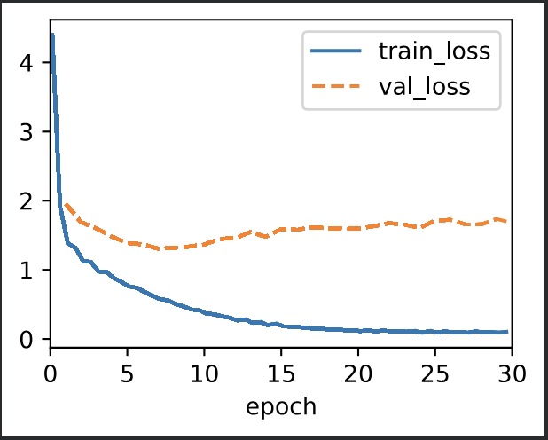
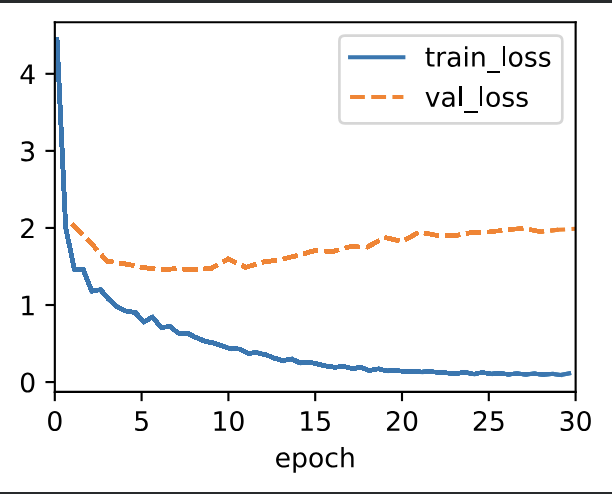
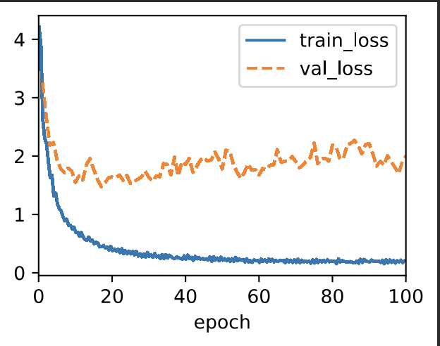

epochs at 30,
embed_size 256,
num_hiddens 256,
num_layers 2,
dropout 0.2,
lr 0.005,
gradient_clip 1

epochs at 30,
embed_size 128,
num_hiddens 256,
num_layers 2,
dropout 0.2,
lr 0.005,
gradient_clip 0.5

epochs at 100,
embed_size 256,
num_hiddens 512,
num_layers 3,
dropout 0.3,
lr 0.01,
gradient_clip 0.2
With the small size of the dataset there appears to be overfitting as the validation loss increases around the tenth epoch.
Using the hyperparameters label base, three of the blue scores were 1.000 and the predictions were correct (English phrases: go ., I lost ., I’m home).
One other phrase received a blue score of 0.492 (English phrase: he’s calm .). The translation showed the first word ”he’s” as unknown but was able to correctly translate the second word ”calm”.
All the rest of the phrases received a 0.000 blue score. Every one of them had an unknown value, however the odd part was that the translations didn’t show the correct number of unknowns.
If an English phrase contained 4 words, the translation prediction would contain at least one correctly predicted French word, but at least one fewer unknown prediction than was in the English phrase.
For the first adjusted hyperparameters changing the embed_size and gradient_clip, the same results and unknown prediction issue were seen as in the base hyperparameters except there was a slight improvement of the blue score on the ”he’s calm .” phrase to 0.658.
For the second adjustment, I changed to more aggressive hyperparameters. The blue scores on the phrases that were a perfect 1.000 were worse except for the phrase ”I’m home .” (1.000 again) and the ”he’s calm .” phrase (0.658).
One phrase that generally received a 0.000 blue score (he went to school .) did have an improvement in score 0.399. There were however fewer unknown predictions, but again the prediction didn’t contain the correct number of words in the prediction.